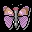

|  |
B u t t e r f l y |
1.6.1 |
english version | version francaise | русская версия | italian version
| Файл |
Butterfly-v1.6.pkg |
| Автор |
Thomas THERY
<dragfly_kj@rocketmail.com> |
| Сопровождение |
Benjamin THERY
<bthery@chez.com> |
| Перевод на русский |
Олег "2sheds" Курапов <2sheds@newmail.ru> |
| Версия |
v1.6.1 (03.12.2001) |
| Совместимость |
BeOS R5 for Intel |
| Описание |
Графический браузер |
| Примечание |
Бесплатно |
Butterfly - графический браузер, использующий трансляторы для просмотра и конвертации изображений. Мы брали пример с замечательного графического браузера Sea для DOS. Назначение Butterfly - простой и быстрый просмотр любого числа изображений.
Программа предоставляется 'как есть'.
Мы не несем никакой ответственности за любые повреждения, прямо или косвенно вызванные использованием этой программы - ВЫ ИСПОЛЬЗУЕТЕ ЕЕ НА СВОЙ СТРАХ И РИСК!
- Перемещение по файловой системе
- Поддержка drag-and-drop (в том числе и для ссылок)
- Динамическое изменение размера изображения
- Плавное масштабирование изображения
- Конвертация и сохранение в другие форматы
- Прокрутка изображения мышью
- Помещение изображений на рабочий стол
- Многоязыковая поддержка
| И с п о л ь з о в а н и е |
Для перемещения Вы можете использовать как мышь, так и клавиатуру.
Чтобы открыть директорию, дважды щелкните по ней мышью или нажмите Enter. Текущий путь отбражается на информационной панели.
Чтобы просмотреть изображение, щелкните на его имени или используйте клавиши-стрелки, чтобы его выделить.
Вы можете использовать Drag'n'Drop для нескольких действий: перенести иконку изображения на иконку Butterfly для запуска программы или перенести иконку изображения или директории в окно Butterfly для просмотра.
Нажатие правой кнопки в области изображения вызывает всплывающее меню с различными командами (см. далее).
| +/- |
Увеличить/уменьшить размер |
| * |
Размер 100% |
| [Пробел] или . |
Полноэкранный режим (весь экран занят изображением) |
| |
|
| Стрелка Вверх |
Вверх по списку файлов |
| Стрелка Вниз |
Вниз по списку файлов |
| Backspace |
Перейти на директорию вверх |
| Del |
Удалить выбранный файл |
| |
|
| Shift + Стрелка |
Прокрутить изображение в направлении стрелки |
| |
|
| Левая кнопка мыши |
Прокрутка изображения |
| Правая кнопка мыши |
Вывести всплывающее меню |
| Конвертировать... |
Конвертировать и сохранить выбранное изображение в другом формате |
| На рабочий стол |
Сделать изображение фоном рабочего стола |
| На все рабочие столы |
Сделать изображение фоном всех рабочих столов |
| Увеличить/Уменьшить |
Без комментариев... |
| Настройки... |
Открыть панель настроек |
Релиз 1.5 .1 (25.01.2001)
Релиз 1.5 (06.12.2000)
- Русский перевод выполнил Олег Курапов (aka 2sheds)
Мы были бы рады добавить в Butterfly поддержку других языков, свяжитесь с нами, пожалуйста, если вы знаете немецкий, итальянский, испанский, японский, греческий... и хотите получить локализованную версию
- Добавлена новая "горячая клавиша" [Backspace] - нажав на нее вы перейдете на директорию вверх
- Drag'n'drop : теперь вы можете запускать Butterfly, перенеся иконку директории, которую вы хотите просмотреть, на иконку программы
- Исправлен баг : открытие панели конвертации в случае, когда ни один файл не загружен, "подвешивал" программу
- Исправлен баг : при выходе из полноэкранного режима сохранялся неправильный размер экрана
Если в версии 1.4 вы "застряли" в полноэкранном режиме, можете изменить аттрибуты файла home/config/settings/Butterfly_settings с помощью утилиты DiskProbe
Релиз 1.4 (24.11.2000)
- Внесены изменения в код для интернационализации : доступна французская версия.
Выбор языка - в панели настроек.
Если кто-либо хочет увидеть поддержку других языков, свяжитесь, пожалуйста, с нами.
- Запоминается размер и положения окна на экране, а также полноэкранный режим и режим авторазмера
- Убрана синяя линия фокуса в окне навигации, плюс несколько изменен интерфейс
Релиз 1.3 (23.10.2000)
- Теперь Butterfly может удалять файлы. Это может быть полезно, если вы используете Butterfly для сортировки большого количества изображений
- Нажатие кнопок (+/-) в режиме Авторазмера возвращает в обычный режим
- Некоторые исправления
Релиз 1.2.2 (3.10.2000)
- Правильно работает сортировка файлов и директорий по алфавиту
- Переход из полноэкранного режима в оконный режим с включенной функцией
Авторазмера работает правильно
- Улучшения в коде
Релиз 1.2.1 (24.09.2000)
- Исправлен неприятный баг : предыдущая версия не могла открывать директории, содержащие более чем 128 файлов изображений
Релиз 1.2 (22.09.2000)
- Эстетические изменения
- Расширена поддержка drag'n'drop : Теперь можно перенести иконку изображения на иконку
Butterfly в Трекере.
- Также поддерживаются параметры командной строки : Butterfly
[image]
- Документация в HTML
- Нажмите [Пробел] для переключения между оконным и полноэкранным режимами
Релиз 1.0b2 (?????????????24.10.1999)
- При загрузке нового изображения масштаб устанавливается равным 100%
- Установка масштаба на 100%
Release 1.0b1 (24.10.1999)
- Добавлена функция 'На рабочий стол'
- Исправлено несколько ошибок
- Добавлена панель настроек
Релиз 0.9.0 (16.10.1999)
- Прокрутка изображения с помощью мыши
- Конвертация в другие форматы
- Всплывающее меню
Релиз 0.3.0
- Масштабирование изображения
- Прокрутка с помощью клаватуры
- Drag'n Drop работает в любом месте окна
- Исправлен баг с неправильным размером вертикальной линейки прокутки
Релиз 0.2.0 (08.03.1999)
- Поддержка drag-and-drop.
- Улучшение изображения
Релиз 0.1.0 (08.03.1999)
| Б л а г о д а р н о с т и |
Edmund Vermeulen <edmundv@xs4all.nl> - за его примеры трансляторов, используемые при конвертации.
Всегда рады вам помочь.
CrazyBugs Design
сайт : http://www.multimania.com/dragfly и http://www.chez.com/bthery/butterfly/Butterfly.html
e-mail: dragfly_kj@rocketmail.com или
bthery@chez.com (для сообщений об ошибках)
Copyright �2000 CrazyBugs Design. All rights reserved.
Russian translation: Oleg "2sheds" Kourapov, 2000